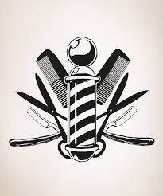
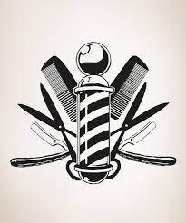

As barbearias têm sido um refúgio para homens que buscam mais do que um simples corte de cabelo. Elas se tornaram espaços de convivência, troca de experiências e cuidado pessoal.

As barbearias têm sido um refúgio para homens que buscam mais do que um simples corte de cabelo. Elas se tornaram espaços de convivência, troca de experiências e cuidado pessoal.Uma barbearia de qualidade oferece muito mais do que serviços de barba e cabelo. Ela proporciona um ambiente acolhedor, com profissionais qualificados que entendem as necessidades individuais de cada cliente. Ao entrar em uma barbearia autêntica, é comum ser recebido por uma decoração vintage e um clima descontraído. Os clientes desfrutam não apenas de cortes precisos e cuidados com a barba,
mas também de conversas animadas, boa música e, em alguns casos, até mesmo uma bebida para acompanhar o momento.
Além disso, as barbearias modernas têm investido em serviços adicionais, como massagens faciais, tratamentos capilares e até mesmo cuidados estéticos. Essa abordagem holística do cuidado masculino tem atraído cada vez mais clientes em busca de uma experiência completa. As barbearias se tornaram verdadeiros centros de bem-estar masculino, onde os homens podem relaxar, se cuidar e sair com a autoestima renovada. Com atenção aos detalhes, serviços personalizados e um ambiente agradável, as barbearias continuam a desempenhar um papel importante na vida dos homens contemporâneos.